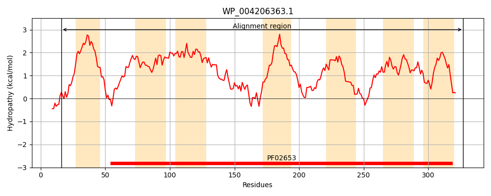
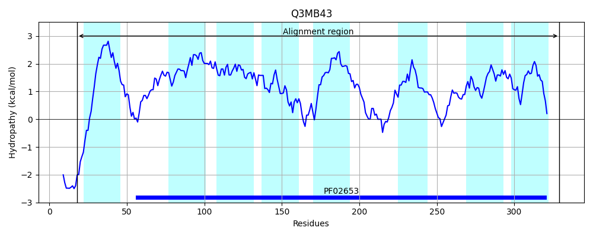
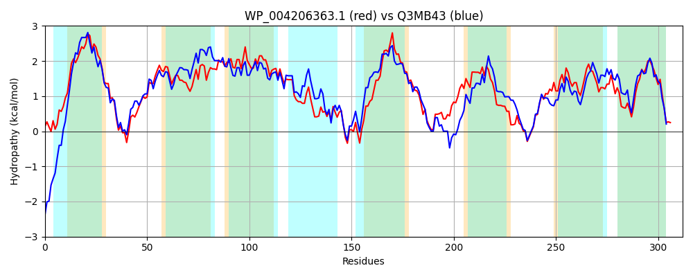

Hit Accession: Q3MB43
Hit TCID: 3.A.1.2.29
Hit Description: gnl|BL_ORD_ID|13520 gnl|TC-DB|Q3MB43|3.A.1.2.29 Inner-membrane translocator OS=Anabaena variabilis (strain ATCC 29413 / PCC 7937) GN=Ava_2173 PE=3 SV=1
Mach Len: 312
e:0.000000
Query TMS Count : 7
Hit TMS Count: 8
TMS-Overlap Score: 7.650000
Predicted Substrates:CHEBI:4119;keto-D-fructose
BLAST Alignment:
Score: 1080 , Bit scores: 420 bits, E-value: 2.0e-148, Alignment length: 312, Percentage identity: 68
Query: 16 SAKKMLMGDLMQTVGILPILILIVAVFGFIAPNFFTESNLLNITRQASINIVLAAGMTFIILTGGIDLSVGSILGTTAVAAMVVSLIPELALLSIPAALMLGLLLGLFNGALVAFAGLPPFIVTLGTYTALRGAAYLLADGTTVINSDISFEWIGNDYLGPVPWLVVIALAVIAVCWFILRRTTLGVHIYAVGGNMQAARLTGIKVWLVLLFVYGMSGLLSGLGGVMSASRLYSANGNLGVGYELDAIAAVILGGTSFVGGIGTITGTLVGALIIATLNNGMTLMGVSYFWQLVIKGAVIIIAVLIDKYRTR 327
S ++ + +L+Q GILPIL++I +F ++PNF T N +NI RQASINIVLA GMTF+ILTGGIDLSVGSIL +AV ++VSL+P L ++P L+ GLLLGL NGAL+ F +PPFIVTLG+ TALRGAA+L+A+GTTVIN +I+F WIGN Y+G +PWLV+IAL +AV WF+LR+T LGV IYAVGGN +AARLTGIKV VLLFVYG+SGLL+GL G+MSASRLYSA G LG GYELDAIAAVILGGTSF GGIGTI GTL+GALIIA LNNG+TL+ +S+FWQLV+KG VII AV+ID+ R R
Sbjct: 18 SRQRQSINNLLQVAGILPILVIICILFSLLSPNFPTAGNAVNILRQASINIVLATGMTFVILTGGIDLSVGSILAVSAVVTVLVSLLPALGWAAVPVGLLTGLLLGLLNGALITFLDVPPFIVTLGSLTALRGAAFLIANGTTVINRNINFAWIGNSYVGFLPWLVIIALLTVAVSWFVLRQTVLGVQIYAVGGNERAARLTGIKVNRVLLFVYGVSGLLAGLAGIMSASRLYSATGMLGQGYELDAIAAVILGGTSFTGGIGTIGGTLLGALIIAVLNNGLTLLNMSFFWQLVVKGLVIIAAVMIDRLRRR 329 | Protein Hydropathy Plots: |
|---|
|  |  |
Pairwise Alignment-Hydropathy Plot:
|
|---|
|  |